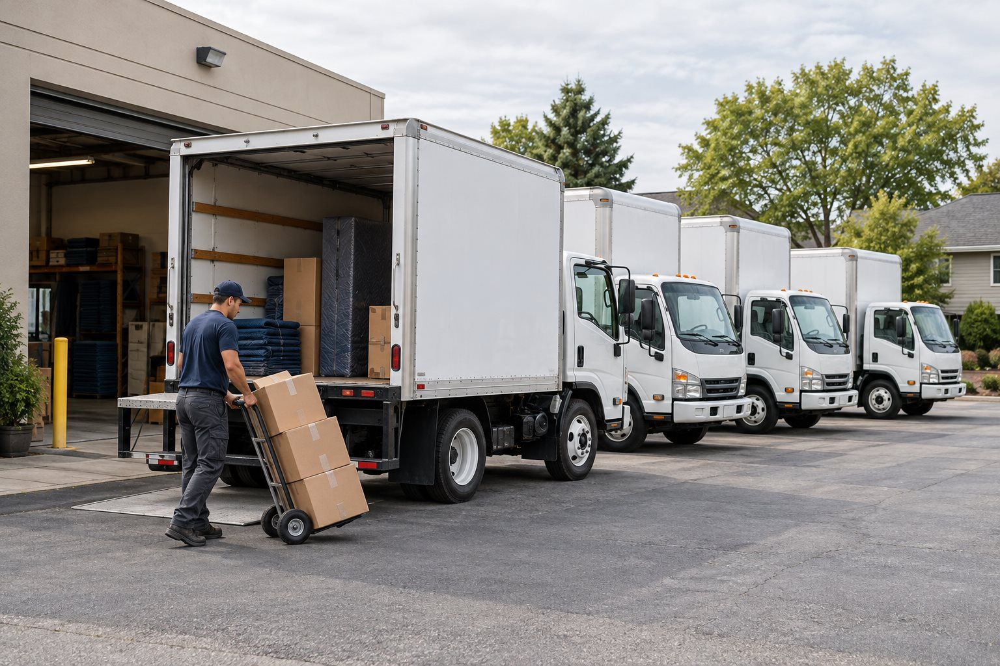

Delivery and box truck businesses
Bring a list of delivery contracts, typical loads, and operating areas. Identify whether you transport your own products or freight belonging to customers.
Explore commercial truck insurance →
A guide for growing businesses
More vehicles. More moving parts.
Build a coverage review around the way your business actually runs.
The quick answer
Commercial fleet insurance is an approach to insuring multiple business vehicles through a coordinated commercial auto policy or program. It can simplify renewals and vehicle changes, but the coverage still needs to reflect each vehicle, driver, and business use.
There is no single vehicle count that makes every business a fleet. Carrier programs have different eligibility rules. Progressive, for example, distinguishes standard commercial auto, small fleet, and larger or specialized fleet programs. Read Progressive's fleet insurance guide.
For your review, start with a practical question: does your current insurance arrangement still fit the number of vehicles you operate and the work they perform?
Start with your operation
A useful review starts with what happens during a working day. Describe the routes, stops, drivers, and property carried before comparing policy labels.
Bring a list of delivery contracts, typical loads, and operating areas. Identify whether you transport your own products or freight belonging to customers.
Explore commercial truck insurance →List work vans, pickups, trailers, and the tools that travel with each crew. Flag vehicles that stay at employees' homes or serve several job sites.
Explore commercial van insurance →Separate company cars, service vans, and larger trucks on your vehicle list. Explain who uses each one and whether vehicles are owned, leased, or rented.
Prepare your vehicle list →Build the coverage picture
Liability and protection for the vehicle address different losses. Use this comparison to ask what a proposed policy actually includes. Every coverage is subject to its terms, limits, deductibles, and exclusions.
| Coverage to review | What it may address | Ask before you choose |
|---|---|---|
| Auto liability | Covered bodily injury or property damage claims involving others arising from insured vehicle use. | Which vehicles and uses qualify, and do the limits meet your contracts? |
| Collision | Covered damage to an insured vehicle from a collision or overturn. | What deductible applies to each vehicle? |
| Comprehensive | Covered non-collision losses, such as theft, fire, or vandalism. | How is a vehicle valued after a total loss? |
| Uninsured / underinsured motorist | Certain losses involving a driver with insufficient insurance, depending on state law and policy terms. | What protection is offered or required for your operation? |
| Hired / non-owned auto liability | Specified business liability involving rented vehicles or employees' personal vehicles used for work. | What separate protection is needed for damage to those vehicles? |
Coverage reference: Travelers' commercial auto coverage overview. This educational reference does not imply a Motive appointment with that insurer.
Add a second list for freight, tools, equipment, and customer property. Ask the agent to identify the policy or endorsement that would address each item. Do the same for loading, unloading, and storage activities. Write down unresolved questions before accepting the quote.
Beyond company-owned vehicles
An employee making a business errand in a personal car can create a liability exposure for the company. Non-owned auto liability may address certain claims involving that activity; it generally does not pay to repair the employee's car.
Renting a replacement vehicle raises another question: does your arrangement include hired auto liability and any needed physical damage coverage? Describe both situations during your review, including how often they occur.
Understand the price
Your vehicle count alone cannot produce a meaningful estimate. Vehicle types, driving history, business use, garaging locations, limits, and deductibles can affect the price. Fleet arrangements may offer administrative advantages, but savings are not guaranteed.
Put quotes side by side with matching vehicle and driver lists. Check the liability limit, physical damage deductibles, covered uses, exclusions, and any additional protections. A lower payment deserves a closer look if one quote leaves out a vehicle or coverage you asked to include.
Record the total quoted premium, initial payment, installment amounts, and any listed fees. Keep the quote date and proposed effective date with the comparison so you can ask about changes before making a decision.
Prepare your driver-selection process, maintenance records, and any safety or telematics information you already keep. Ask which details the insurer considers and whether any eligible program could affect your quote.
Compare the proposed deductibles with the cash your business could make available after a loss. Ask for alternative quotes if you want to understand the premium difference, and document the tradeoff before choosing.
Pricing factors and program considerations: Progressive Commercial and Travelers.
Make the review useful
You do not need a polished presentation. A current spreadsheet and your existing policy documents give the conversation a clearer starting point.
Keep an extra column for anything you still need to confirm. Motive can help identify which details are needed for the available options.
Gather the legal business name, address, contact details, description of operations, and current policy renewal date.
List each VIN, year, make, model, garaging address, ownership or lease status, and the work it performs. Include trailers for discussion.
Prepare the current driver list and assignments. Ask how to provide license details securely and which driving-history information is needed.
Describe typical mileage, operating radius, states traveled, and the goods or equipment carried. Note seasonal changes.
Have declarations, endorsements, and available claims information ready. Ask whether the insurer needs formal loss runs.
Collect customer insurance requirements and details of upcoming vehicle purchases, hires, rentals, or new delivery contracts.
Keep records current
Create a simple handoff between whoever buys vehicles, hires drivers, and manages insurance. Give one person responsibility for reporting changes and retaining the insurer's response.
For each request, record the vehicle or driver involved, the requested effective date, and the confirmation received. Follow the policy's reporting conditions; do not assume a purchase receipt or an emailed request confirms coverage.
At renewal, compare the policy schedule with your actual operation. Flag sold vehicles, new garaging locations, revised routes, and changes in the type of work you accept.
Already a Motive customer? Use our policy-change page to start a request.
Fleet insurance can allow businesses to insure multiple commercial vehicles under a coordinated policy arrangement rather than maintaining unrelated policies for every vehicle.
For businesses operating delivery trucks, contractor vans, service vehicles, or multiple box trucks, Motive can help review available fleet coverage options, driver requirements, liability limits, and operational risks.
The goal is to simplify coverage management while protecting the vehicles that generate business revenue.
You do not necessarily need a large transportation company to begin discussing fleet insurance. Some insurers offer multi-vehicle commercial arrangements for smaller businesses, while dedicated fleet programs may have minimum vehicle or other underwriting requirements.
Motive can assess your number of vehicles, business use, and expansion plans to determine which commercial insurance approach is worth comparing.
Depending on the carrier and business operation, a commercial policy may accommodate different vehicle types, including delivery vans, box trucks, and service vehicles.
However, some specialized trucking risks require separate arrangements. Motive helps business owners review their entire vehicle inventory rather than assuming every commercial vehicle belongs under the same coverage.
Adding or removing a vehicle or driver can change the coverage details and premium of your commercial insurance policy. New vehicles and drivers should be reported according to your insurer's policy conditions before they are placed into service.
Motive can help you request changes and review the updated policy documents so your records reflect the vehicles and drivers used by your business.
Fleet insurance costs may be influenced by driving records, claims experience, vehicle type, safety procedures, deductibles, and how vehicles are used.
Motive helps businesses review these factors, compare eligible insurance options, and identify areas where costs may be managed without automatically lowering important liability or physical damage protection.
Plan your next move with Motive
Bring your vehicle list, driver roster, and current coverage. Motive Insurance Solutions can help you review available options for your operation in Illinois, Indiana, or Wisconsin, subject to licensing, carrier availability, and underwriting.
A request does not bind coverage or change an existing policy. Confirm coverage and effective dates with your agent.